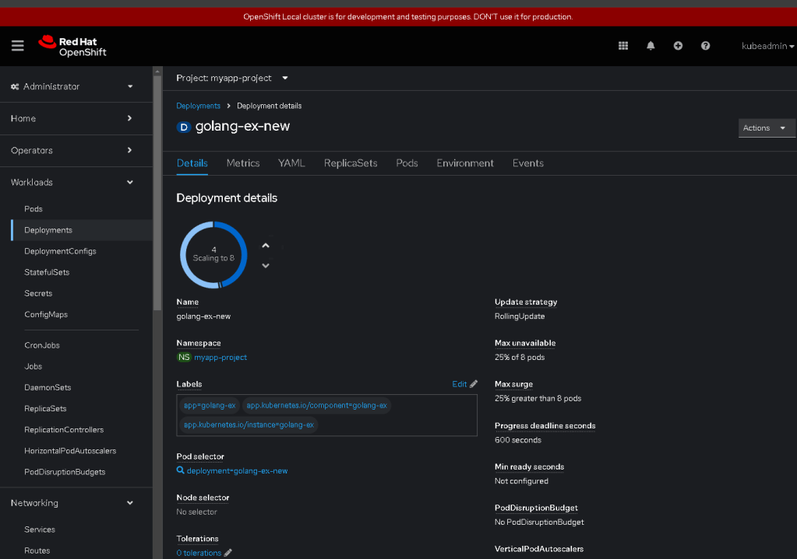
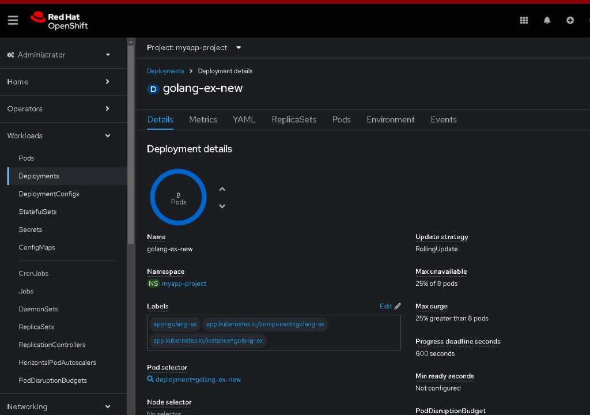

Scaling Your OpenShift Deployments Using the Web Console

Introduction:
Scaling your applications in OpenShift is a fundamental task that allows you to adjust the number of pod replicas based on your application's needs. OpenShift provides a user-friendly web console to easily scale deployments without needing to use the command line. In this guide, we will walk through the process of scaling a deployment using the OpenShift web console.
Step-by-Step Guide:
-
Access the OpenShift Web Console:
-
Start by logging into your OpenShift cluster's web console. Ensure you have the necessary permissions to manage deployments within the project you're working on.
-
Navigate to Your Project:
-
On the left sidebar, select the project where your application is deployed. For example, in this guide, we are working within the
myapp-project. -
Go to Deployments:
-
In the "Workloads" section on the sidebar, click on Deployments. This will display a list of all deployments in your selected project.
-
Select the Deployment to Scale:
-
Find the deployment you wish to scale. In our example, it's
golang-ex-new. Click on the deployment name to view its details. -
Scale the Deployment:
-
On the deployment details page, you'll see a section labeled Scaling with a circular scale indicator. This indicator shows the current number of pod replicas and allows you to adjust the desired count.
-
Use the up or down arrows or enter the desired number of replicas directly to scale your deployment. In our example, the deployment is scaling from 4 to 8 pods.
-
Confirm the Scaling Action:
-
After adjusting the desired replica count, OpenShift will automatically start scaling the deployment to match the new configuration. You can monitor the progress through the web console.
-
Monitor Scaling Status:
-
Check the Pods section to ensure that the new pods are being created and becoming ready. The scaling status and any potential issues will also be visible in this section.
-
Understand the Scaling Policy:
-
OpenShift uses different strategies for deployment updates. In this example, the Update Strategy is set to
RollingUpdate, with aMax unavailableof 25% andMax surgeof 25%. This means that during an update, OpenShift will ensure a minimum of 75% of the replicas are available and can create up to 25% more than the desired number of replicas to handle traffic.
Conclusion:
Scaling your application in OpenShift is simple and intuitive using the web console. This flexibility allows you to adjust resources quickly in response to demand changes, ensuring your applications remain performant and responsive. For more advanced configurations, you can explore autoscaling and manual scaling using the OpenShift command line tools.
Tips:
-
Autoscaling: Consider configuring Horizontal Pod Autoscalers (HPA) for dynamic scaling based on CPU and memory usage.
-
Monitoring: Regularly monitor your application performance and pod statuses to ensure your scaling strategies meet your business requirements.
By following these steps, you can efficiently manage your deployments in OpenShift, ensuring your applications can scale up or down as needed to handle varying loads.
Output

🔗 Connect with me:
-
💼 LinkedIn: https://www.linkedin.com/in/rifaterdemsahin/
-
🐦 Twitter: https://x.com/rifaterdemsahin
-
🎥 YouTube: https://www.youtube.com/@RifatErdemSahin
-
💻 GitHub: https://github.com/rifaterdemsahin
Imported from rifaterdemsahin.com · 2024